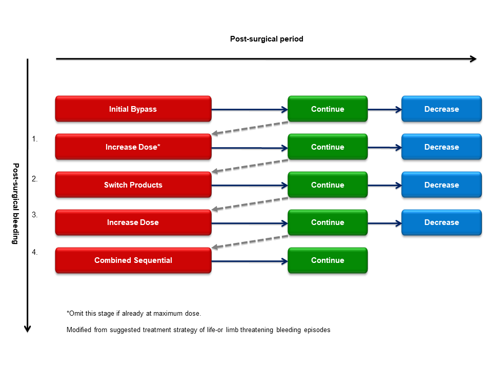

9 Surgery in PWHs with inhibitors
Recommendations
- APCC and recombinant activated factor VII (rFVIIa, NovoSeven®) are the treatment of choice in patients where the inhibitor level exceeds 5 BU/mL. For dosage see Table 9.1 and Table 9.2.
| Preoperative dose | Postoperative management | |
|---|---|---|
| rFVIIa | ||
| Minor surgery | 90 \(\mu\)g/kg | 90 \(\mu\)g/kg every 2 h up to four times, then every 3-6 h until discharge |
| Major Surgery | 90-120 \(\mu\)g/kg | 90 \(\mu\)g/kg every 2 h the first 48 h, then 90 \(\mu\)g/kg every 3, 4 the 6 h on days 3, 5, and 8 respectively until discharge CI*: 50 \(\mu\)g/kg/h |
| aPCC | ||
| Minor surgery | 50-100 IU/kg | 50-75 IU/kg every 8-12 h until discharge |
| Major surgery | 75-100 IU/kg | 70 IU/kg every 8 h for at least 3 days with a maximum daily dose of 200 IU/kg. Dose may be tapered from day 4 to 50-75 IU/kg every 8 h. |
*CI: Continuous infusion
| Preoperative dose | Postoperative management | |
|---|---|---|
| rFVIIa | ||
| Minor surgery | 90 \(\mu\)g/kg | 90 \(\mu\)g/kg rFVIIa (single dose) and/or tranexamic acid 10 mg/kg i.v. (x4 doses). In the event of excessive post-operative bleeding, an additional 90 \(\mu\)g/kg rFVIIa may be considered. |
| Major Surgery | 90-120 \(\mu\)g/kg Tranexamic acid 10 mg/kg i.v. |
Perioperatively: 90 \(\mu\)g/kg rFVIIa every 2 h. Adjust dosing according to bleed volume. - In the event of excessive bleeding, increase the rFVIIa dose (maximum single dose should not exceed 270 \(\mu\)g/kg) or shorten the duration between rFVIIa doses. - In the absence of bleeding, or presence of very minor bleeding, consider reducing rFVIIa dose (90 \(\mu\)g/kg every 3–4 h). Post-operative dosing recommendations: a. Days 1–2 (0–48h) post-procedure: 90 \(\mu\)g/kg rFVIIa every 2–3h + tranexamic acid 10 mg/kg i.v. (×4 doses). b. Days 3–4 (48–96h) post-procedure: 90 \(\mu\)g/kg rFVIIa every 4 h + tranexamic acid 10 mg/kg i.v. (×4 doses). c. Days 5–7 (96–168h) post-procedure: 90 \(\mu\)g/kg rFVIIa every 6 h + tranexamic acid 10 mg/kg i.v. (×4 doses). Adjust dosing according to bleed volume. |
| aPCC | Only patients not responsive to rFVIIa | |
| Minor surgery | < 50 IU/kg | Individualized low doses (<50 IU/kg per dose) every 8–12 h until bleeding is resolved. |
| Major surgery | < 50 IU/kg | Individualised low doses (<50 IU/kg per dose) every 8–12h until bleeding is controlled. |
Surgery in persons with hemophilia and high–titered inhibitors is a clinical challenge and was for a long time considered as almost impossible. However, surgical experience during the last 20-25 years using bypassing agents have shown that despite increased bleeding risk compared to non-inhibitor patients, the results are in general good [96]. Consequently, patients with inhibitors should not be denied surgical procedures. Nevertheless, surgery continues to pose a major challenge in these patients, as the costs are significantly higher than in patients without inhibitors in addition to a higher risk of bleeding.
All surgical procedures in patients should be conducted by a specialized surgeon in association with a hemophilia comprehensive care center.
Currently, there are today no standardized laboratory assays to monitor the efficacy and optimal dosing of bypassing products following surgery. However, preoperative evaluation of hemostatic response to bypassing agents using thrombin generation test (TGT) or thromboelastography has been reported as a means to predict and optimize the hemostatic outcome during the peri- and postoperative phase [97,98].
9.1 aPCC and rFVIIa
The bypassing agents aPCC - factor eight inhibitor bypass activity (FEIBA®, Baxter AG, Vienna, Austria), and recombinant activated factor VII (rFVIIa) (NovoSeven®, NovoNordisk A/S, Bagsvaerd, Denmark) are the treatment of choice in patients with if the inhibitor level exceeds 5 BU/mL. Which one to use depends on several factors as the age of the patient, prior history of efficacy to a product, costs and safety. APCC have been used extensively for a long period of time and has the advantage of dosing every 8-12 h, whereas rFVIIa must be infused every 2-3 h. rFVIIa offers the advantage of being a recombinant protein, and therefore unlikely to be contaminated with infectious agents, as opposed to aPCC which is plasma derived. However, the risk is minimized as aPCC is now double virus inactivated and no transmission of blood born infectious agents has been reported since these precautions were undertaken. Both products are effective in achieving hemostasis, and one should switch to the other product if the first choice fails. Side effects including venous thrombotic events, disseminated intravascular coagulation (DIC) and myocardial infarction have been reported using both aPCC and rFVIIa, although at a very low incident rate, if doses within the manufacturers recommended range are used. The main disadvantages of rFVIIa compared to aPCC are high cost and frequent infusions (see chapter Inhibitors).
9.2 Management of substitution therapy in the peri- and postoperative phase
In patients with a low-titer (<5 BU) or a low responding inhibitor the use of high dose FVIII or FIX concentrates to overcome the inhibitors might be applicable in the initial phase. However, an anamnestic response may occur and one should be prepared to switch to a bypassing agent at any time.
9.3 aPCC - FEIBA®
During the last 20 years more than 200 surgical procedures have been reported in case reports using aPCC as replacement therapy in patients with inhibitors. The hemostatic efficacy in these case series have been reported from 75-100% [99]. Variable initial doses, frequency and duration of treatment using aPCC have been reported however, continuous infusion has not been studied.
The Norwegian experience using aPCC for surgery counts 37 surgical procedures, 17 major and 20 minor [96–98,100]. APCC was delivered by short –time infusions (15-20 min) three times daily. A preoperative loading dose of 100 IU/kg was given. The following doses were adjusted to a total daily dose of 200 IU/kg/d. Following the third postoperative day, the dose of aPCC was tapered to a daily dose 150 IU/kg and from the 7th postoperative day tapered gradually to 100 IU/kg. 50 IU/kg every second day was given as post surgical prophylaxis and prior to physical therapy. A good or excellent hemostatic outcome was observed for all minor procedures and in 15/17 (88%) of the major procedures. A few consensus reports for using aPCC as replacement therapy in inhibitor patients undergoing surgery based on the present literature have been published [99,101]. Common in these recommendations are a preoperative bolus infusion of 50-100 IU/kg and then a dose of 75-100 IU/kg every 8-12 h with a maximum daily dose of 200 IU/kg and depending on the clinical condition and type of surgery the dose may be tapered until discharge (Table 9.1).
9.4 rFVIIa - NovoSeven®
Many case series with a small number of patients have reported a good hemostatic outcome using rFVIIa for different surgical procedures in PWHs with inhibitors. However, variable doses and protocols have been reported and only two small prospective randomized studies have been published addressing the dose and mode of administration [102,103]. Shapiro and colleagues compared the effect of two doses of rFVIIa in 29 patients with inhibitors for minor and major operative procedures. The patients were randomized to either 35 \(\mu\)g/kg vs 90 \(\mu\)g/kg every 2 h for 2 days, then every 2-6 h for total 5 days. Concerning major surgery the effectiveness at day 5 was found to be 40% for the low dose whereas 83% for the high dose concluding that rFVIIa 90 \(\mu\)g/kg is an effective first-line option for major surgery in patients with inhibitors. Concerning minor surgery, 70% and 100% of the procedures were found to be effective or partially effective for the low dose and high dose, respectively.
Pruthi and colleagues [103] studied the efficacy and safety of administering rFVIIa after an initial bolus dose of 90 \(\mu\)g/kg and then randomization to either repetitive bolus infusion (BI) (90 \(\mu\)g/kg) every two hours or continuous infusion (CI) 50 \(\mu\)g/kg/h for 5 days in 22 major surgical procedures in hemophilia A or B patients with inhibitors. They found comparable hemostatic efficacy and safety of BI and CI, however the treatment was considered as ineffective in three subjects in each arm.
Valentino and colleagues reported from the Haemophilia and Thrombosis research registry and literature, which also incorporated a small number of medical procedures (n=45) in addition to surgical and dental procedures and found rFVIIa to be effective in 333 (84%) of the 395 cases represented [104]. Thromboembolic complications attributable to rFVIIa were reported in 0.025% of these procedures.
Based on the present literature a few general expert recommendations have been given for using rFVIIa to cover surgical procedures [101,105] (Table 9.1). The initial bolus dose should at least be 90 \(\mu\)g/kg given immediately preoperatively and then every 2 h for at least 48 h However, due to observed bleeding complications in a minority of procedures an even higher initial bolus dose of 120-180 \(\mu\)g/kg have been proposed. After 2 days the dosage interval may be increased to 3, 4 the 6 h on days 3, 5, and 8 respectively, and continued until discharge.
Pretreatment with 90 \(\mu\)g/kg is recommended before each physical therapy session.
In case of unexpected peri- or postoperative bleeding episodes using bypassing agents one should increase the dose of already initiated treatment agent to maximum dose for rFVIIa (up to 270 \(\mu\)g/kg) or aPCC (200 IU/kg/d). If hemostasis is still not achieved an alternative bypassing agent should be rapidly implemented similarly to unresponsive severe bleeding episodes (see Figure 9.1). If monotherapy with either of the products at maximum doses have been ineffective sequential or concomitant treatment with both bypassing agents might be considered for salvage treatment.

Figure 9.1: Algorithm to manage post-surgical bleeding episodes in patients with high–titer inhibitors
9.5 Emicizumab, Hemlibra®
Emicizumab is a humanized monoclonal antibody that bridges activated factor IX (FIXa) and FX and replaces the function of activated FVIII [106]. Emicizumab was approved by the United States Food and Drug Administration in 2017 and the European Medicines Agency in 2018, for prophylaxis in PWA with or without FVIII inhibitors. Although emicizumab prophylaxis has been shown to be highly efficient in preventing spontaneous bleeds [78], patients may require additional administration of bypassing agents (BPAs) or clotting factors to control bleeding and during surgery. The scarcity of published reports of surgery in patients treated with emicizumab and the occurrence of thrombotic events following cumulative doses of aPCC in the HAVEN 1 emicizumab trial (thrombotic microangiopathy and thrombosis reported in participants each who had received multiple infusions of aPCC for breakthrough bleeding) (>100IU/kg/24 h) [78] have led to recommendations from the United Kingdom Haemophilia Centres Doctors’ Organisation (UKHCDO) [107]. However, recommendations how to mitigate risks are given, similar to those present in a recent review of the literature by an international expert group with practical recommendations [108]. This review lists experiences from 10 major surgeries all of which were arthroplasties, as well as from 25 minor surgeries including 15 central venous catheter device insertion/replacement/removal, 4 circumcisions and 6 dental procedures. Since then, additional reports have been published, such as a single center American report describing results from 20 minor and 5 major surgeries performed in 17 and 5 patients, respectively [109]. In all major and in 15 minor surgeries additional coagulation factor therapy was given and there were no major bleeds, thrombotic events or deaths. In addition, a report published in 2021 describes the results from a questionnaire sent to 144 hemophilia treatment centers (HTC) in 21 European countries. In this study, results from a total of 52 inhibitor positive patients underwent surgery (17 major and 45 minor) while on emicizumab. Major surgeries were mainly covered with rFVIIa by 93.3% of HTCs (n = 14), while 6.7% (n = 1) preferably managed them with emicizumab alone. Minor surgeries were primarily treated with tranexamic acid (57.1%; n = 12), followed by treatment with emicizumab alone (23.8%; n = 5) and treatment with rFVIIa (19.0%; n = 4). Nineteen HTCs answered questions on efficacy of emicizumab during surgery: hemostasis was unsatisfactory in 1 out of 16 (6.3%) major procedures and in 4 out of 43 (9.3%) minor procedures [110]. Thus, since all reported data is observational, evidence based guidelines cannot be given on the use of emicizumab treated patients during surgery, but for simplicity we refer to the practical guidelines given by Jiménez-Yuste et al. [108]. For major surgery, it is recommended that emicizumab should be dosed as per the prescribed maintenance regimen throughout the pre-, peri- and post-operative period but that caution regarding emicizumab administration should be taken when more than one-third of whole blood volume is lost during surgery, because the distribution of emicizumab into the third extracellular compartment has not been described in detail. For major surgery in patients with high titer inhibitors (>5 Bethesda Units [BU]), concomitant heamostatic treatment with rFVIIa should be given (for dosing see Table 9.2). APCC should only be given to patients not responsive to rFVIIa and in reduced doses (Table 9.2). If inhibitor titre is low (<5 Bethesda Units [BU]), high doses of FVIII could be used to achieve hemostasis. For minor surgery administration of BPAs should be considered on an individual basis, and in some cases, no BPAs may be required. If a BPA is indicated, rFVIIa should be used (for dosing, see Table 9.2) and aPCC only to patients not responsive to rFVIIa and in reduced doses.
9.6 Alternative treatments
9.6.1 Recombinant porcine FVIII
Recombinant porcine FVIII (r-pFVIII, Obizur®) has been approved by the EMA for treatment of acquired hemophilia A but has also been used for patients with congenital hemophilia A with inhibitors. In small phase II study involving 25 bleeding episodes in nine patients, none of which had anti pFVIII antibodies, all bleedings were successfully controlled with eight or fewer injections of r-pFVIII. r-pFVIII was well tolerated and no treatment-emergent serious adverse events were reported [111].
The use of r-pFVIII in a surgical procedure has only been described in one case report where a 5 year old male, refractory to ITI, was operated because of a progressively symptomatic aortic coarctation. r-p FVIII was preferred over aPCC or rFVIIa because of the ability to assay FVIII levels throughout the procedure. Haemostasis with r-pFVIII was excellent but because of declining peak and trough levels of FVIII suggesting a rising porcine inhibitor titre, he was switched to aPCC after the procedure [112].
The cost of r-p VIII is substantially higher than that of the other bypassing agents and cannot be recommended to be used in patients with congenital HA with inhibitors until more data on its efficacy is available.
9.6.2 Bypassing agents and antifibrinolytics
The antifibrinolytic agent tranexamic acid (TXA) increases clot stability and is used concomitantly with coagulation factor replacement to improve hemostasis in PWHs without inhibitors. It is not contraindicated to combine rFVIIa with TXA to improve hemostasis although it is not systematically studied. In contrast to rFVIIa, aPCC has not been recommended to be given together with TXA unless a time lag of 6 h between administrations of the two drugs. The reason for this caution is safety concerns with an estimated increased risk of thrombotic events and disseminated intravascular coagulation (DIC). However, strong evidence supporting this precaution is lacking. At least whenever possible applied locally either as mouth rinse or moistened dressings the combination of TXA and aPCC is considered as safe. The dose of tranexamic acid commonly used is 10 mg/kg intravenously or 25 mg/kg orally 3-4 times daily for 7-10 days.
9.6.3 Bypassing agents and thromboprophylaxis
Although thrombosis might be a concern using bypassing agents, postoperative anticoagulation (e.g. low-molecular-weight heparin) is not recommended in patients with inhibitors. For the majority of the patients the use of graduated compression stockings and early mobilization are sufficient to prevent venous thromboembolism. According to current knowledge, the presence of emicizumab does not affect the efficacy or safety of tranexamic acid.